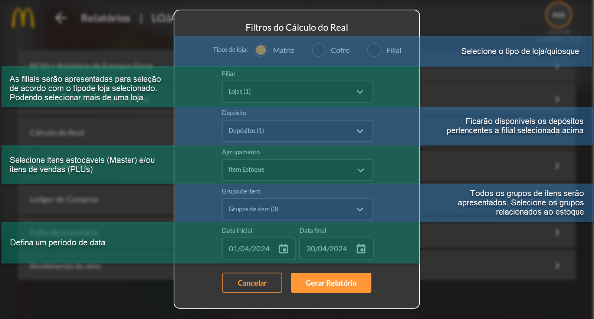
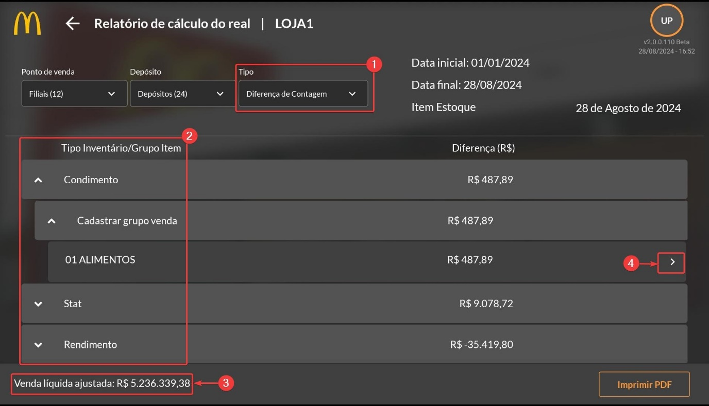
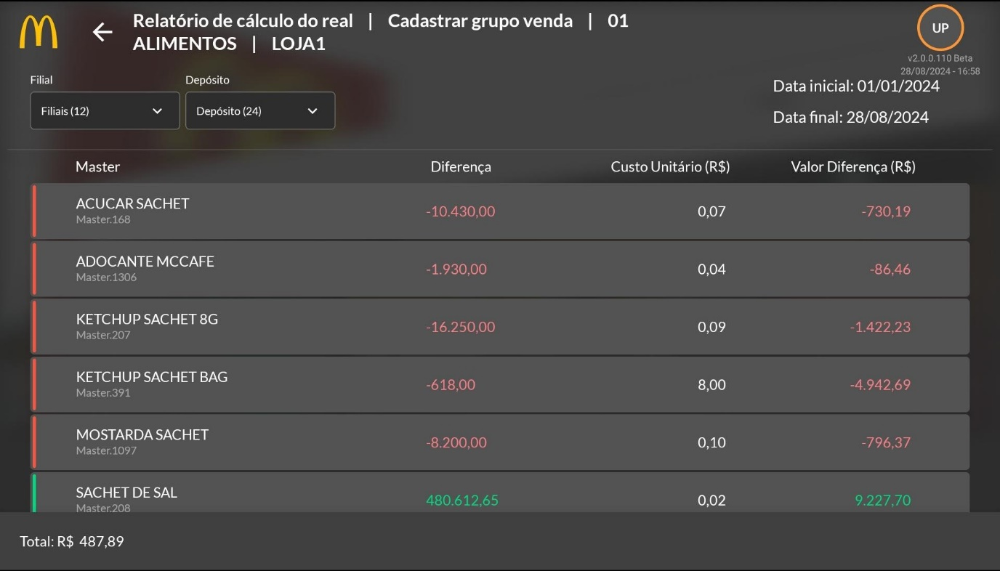
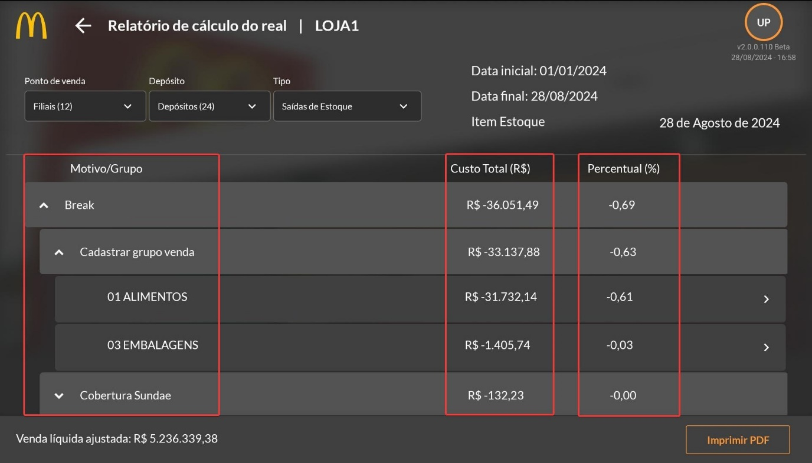

Calculo do Real
O relatório do Cálculo do Real tem duas funções dentro de sua análise, uma semelhante à “Diferença de STAT/Rendimento”, no qual analisa a diferença de contagem de estoque e faz o cálculo do valor em real dessa diferença, e a outra função calcula as saídas do estoque e faz o custo dessas saídas em real. Além disso, ele separa por tipo de item, sendo eles estocáveis (masters) ou de vendas (PLUs).
A diferença entre a escolha do agrupamento se dará somente na forma de organização, enquanto a separação por “Item de Estoque” analisará todos os itens masters, na separação por “Item de lançamento” será analisado os itens de venda (PLU) e alguns itens de estoque (masters).
Após gerar o relatório, a imagem acima representa a tela que será exibida, contendo os dados do filtro escolhidos no momento de gerar o relatório, como a unidade (ponto de venda), o depósito, a data inicial e final e o agrupamento escolhido no cabeçalho da tela, já no rodapé temos a opção de gerar o relatório em arquivo PDF para impressão e a venda líquida (total de vendas após a dedução dos impostos sob o valor bruto) do período selecionado (3). Existem duas formas de cálculo do real: por saída de estoque e por diferença de contagem (sendo semelhante ao relatório de Diferença de STAT/Rendimento). No documento gerado em PDF será apresentada ambas as formas separadamente, mas para visualizar no aplicativo é necessário selecionar no campo “Tipo” (1), localizado no cabeçalho.
O relatório de Cálculo do Real por diferença de contagem possui a mesma lógica que o relatório descrito na subseção anterior (1.7.2.), ele efetuará o cálculo de diferença entre o inventário atual e o inventário esperado e calculará o valor em reais dessa diferença.
Na tela será exibida uma lista de todos os tipos de inventário (2) e sua diferença total em reais, é possível clicar na seta (4) para ver os itens contidos naquele agrupamento (conforme mostra imagem abaixo), porém sem os detalhes que compõem o relatório de Diferença de STAT/Rendimento.
Já o relatório de Cálculo do Real por saída de estoque fará a cálculo do custo em real dos itens que saíram do estoque no período determinado no filtro. A tela exibirá uma tabela contendo os motivos das saídas registradas, seu custo total e o percentual equivalente à venda líquida no rodapé da tela, assim como mostra na imagem abaixo, além disso, é possível clicar na seta para ver os detalhes daquele agrupamento.
